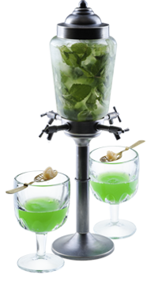

Абсент в фонтане — Повелевай духами!
С момента появления абсента, в конце XVIII века, бытует поверье, будто этот напиток позволяет видеть скрытое и пробуждает в сознании мистические образы…
Легенда коктейля
С момента появления абсента, в конце XVIII века, бытует поверье, будто этот напиток позволяет видеть скрытое и пробуждает в сознании мистические образы.
Говорят, Ван Гог первым научился управлять являвшимися духами и стал их королем, что безусловно нашло отражение в его гениальных полотнах. Кстати, духи Ван Гога, по всей видимости, были желтого цвета, ставшего отличительной чертой его картин.
- Как приготовить:
-
- Фонтан готовится в расчете на 6 порций абсента
- Наполни фонтан для абсента листьями мяты
- Выжми лимон 1,5 шт
- Налей сахарный сироп 150 мл и содовую 750 мл
- Наполни фонтан кубиками льда доверху
- Аккуратно размешай коктейльной ложкой
- Налей в кубок абсент 30 мл
- Положи на кубок ложку для абсента с кусочком тростникового сахара
- Подставь кубок под краник и налей через сахар 150 мл воды из фонтана